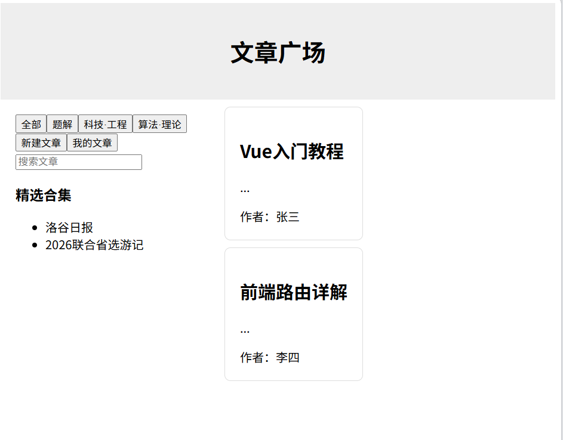

这里是zza的神秘秘密基地！
网站正在持续搭建中，尽情期待！
后端算是学了，现在开始看前端内容 ——4/17
这段时间过的好快啊。虽然一直在鸽虽然时间长了点，但是好多东西都是第一次学，学的东西一定是有用的！
会手编网站的人真的超酷的好吗，我说的不是那种套模板的，模板的改动范围太小，不舒服。 ——4/17
大学的大二下快要半期了。这是最后一学期的有必修课的学期，距离轻松的未来还是很遥远，大家一定要天天开心！
随手放张图片吧，青春版小洛谷。

大学生活就像栈一样，好多事情挤在长期目标前面，而且这学期专业课好多哇 ——3/15
Unity城市守卫战的战斗部分我已经调好了，但是编其他的还在得再等闲下来的时间 ——3/15
城市守卫战网址（开发暂停，但是一定会重启！）